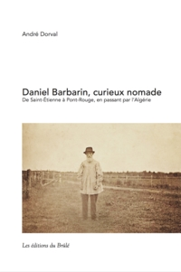

Bienvenue
Ce site a été créé à l’occasion de la publication du livre « Daniel Barbarin, curieux nomade » en septembre 2017.
Il vise à donner accès gratuitement à la version pdf de ce livre.
Notez que la table des matières est située à la page 177.
Bonne lecture!
Téléchargez le livre au format pdf
« Daniel Barbarin, curieux nomade »
Sommaire du livre
Daniel Barbarin avait étudié pour être notaire. Mais il choisit dans les années 1860 de devenir armurier à Saint-Étienne, devenue « capitale des armes » en France. Après quelques années de ce métier, en 1876, il se lance dans l’aventure encore jeune et risquée de la colonisation en Algérie où il s’installe avec sa famille. Revenu en France quatre ans plus tard, il devient successivement agriculteur sur les hauteurs isolées du massif du Pilat, commerçant d’armes, journaliste occasionnel. En 1890, âgé de 50 ans, veuf avec 5 enfants, il traverse l’Atlantique pour venir s’installer au Québec, plus précisément à Pont-Rouge où il décédera, en 1913, dans le rang du Brûlé. Il laissera derrière lui une descendance importante qui a contribué au peuplement de Pont-Rouge et de la région. Mais il a laissé aussi un témoignage manuscrit de sa traversée et de sa découverte d’un nouveau pays, peut-être écrit pour publication éventuelle, mais resté inédit pendant un siècle, oublié dans les archives familiales. Ce texte plus que centenaire est encarté dans le livre. Par son parcours atypique, mon arrière-grand-père avait laissé derrière lui une légende encore bien vivante trois ou quatre générations plus tard. Ce livre vient documenter son histoire et se veut un clin d’œil au 150ième anniversaire de Pont-Rouge. Plus d’une centaine de personnes, surtout des descendants, participaient récemment au lancement de ce livre en septembre 2017.